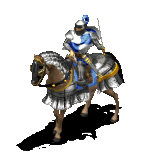

Age of Empires 2
Age of Empires II: The Age of Kings (abreviado AOE2 o AOK) es un videojuego de estrategia en tiempo real para computadoras personales desarrollado en un principio por Ensemble Studios y más tarde por Skybox Labs (su remake), y distribuido por Microsoft Games para los sistemas operativos Windows y Mac OS, y Konami para PlayStation 2.
Fue lanzado a mediados de 1999 y es el segundo título que compone la serie Age of Empires.
El juego está ambientado en la Edad Media, justo tras la caída del Imperio romano y la toma de Roma por los Visigodos. El jugador puede optar entre 13 civilizaciones que existieron en aquel período histórico, y debe encaminarlas para formar un vasto imperio y vencer a sus enemigos. El juego ofrece la posibilidad de jugar contra el ordenador o contra otras personas en línea, con un máximo de 8 jugadores por partida